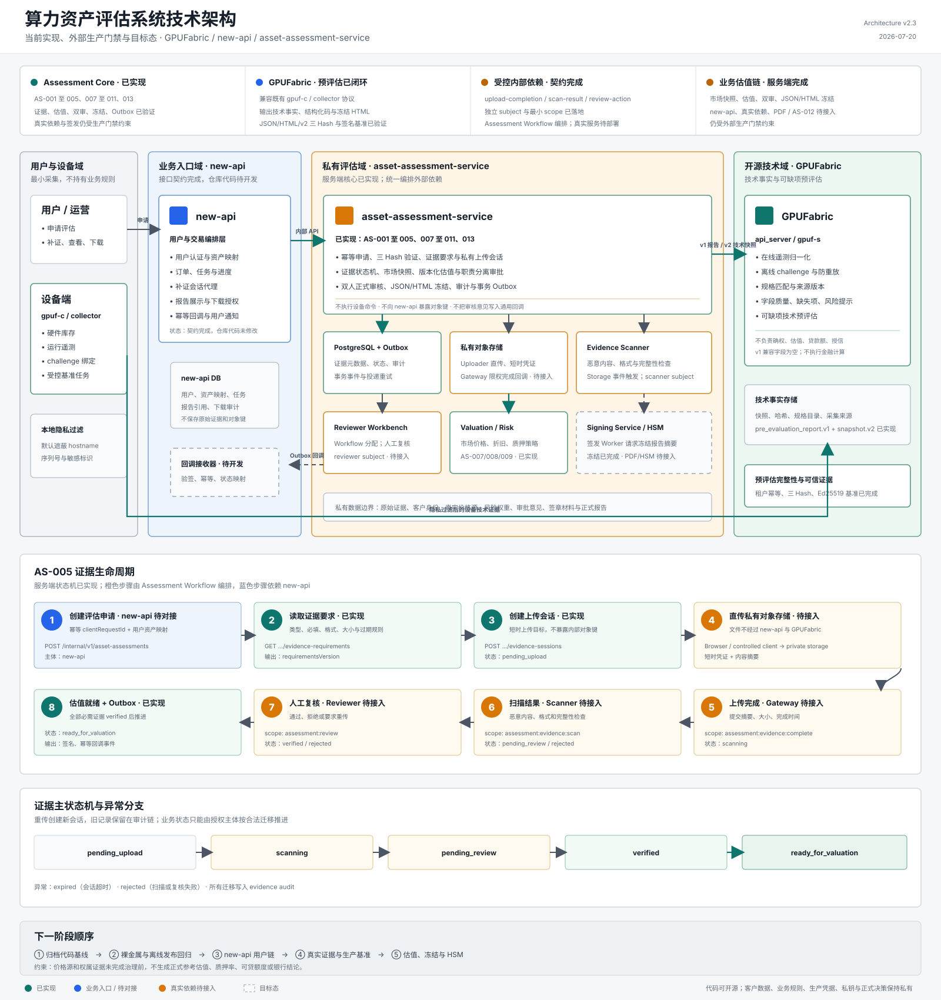

实测与长期观测
签名基准、运行历史、温度、利用率、功耗、错误与稳定性。
区分已实现能力、对接中依赖与目标态，覆盖预评估、证据闭环、估值和正式报告链路。
采集、规范化、技术快照和可缺项预评估；不做确权、定价、质押率或授信判断。
承接用户、资产映射、任务、展示与下载授权；当前仅完成接口契约，代码尚未对接。
已具备申请、补证、市场快照、估值、双人审核和报告冻结；真实依赖与签发仍待接入。
由 assessment-service 编排 Storage、Scanner、Reviewer 与 HSM；各组件使用独立身份，不能被 new-api 直接调用。

主图中的实线绿色节点表示当前代码已具备，蓝色表示外部业务入口，橙色表示私有依赖，灰色虚线表示下一阶段能力。
AS-001 至 AS-005、AS-007 至 AS-011、AS-013，含评估、估值、双审、冻结、审计和 Docker 链路。
兼容既有 clientId 协议；在线/离线、租户幂等、结构化码、JSON/HTML/v2 三 Hash 与签名基准证据均已完成本地端到端验证。
上传完成、扫描结果、人工复核接口已定义；对象存储网关、扫描器与审核工作台未联调。
市场、估值、双审和 JSON/HTML 冻结已有服务端闭环；new-api、真实供应商、PDF 签发和 HSM 仍待接入。
| 能力包 | 当前状态 | 已具备结果 | 下一验收点 |
|---|---|---|---|
| GF-001 至 011 / GF-015 | 已完成 | 在线/离线归一化、来源质量、不可变 v1/v2、租户幂等、结构化码、JSON/HTML/v2 三 Hash、签名基准、防重放和隐私过滤。 | 冻结代码基线并在裸金属与真实离线节点完成发布回归。 |
| GF-012 / 013 | 发布加固 | 静态服务 Token 和独立 benchmark producer Token 已按 subject 分权。 | mTLS/OAuth audience/scope、密钥轮换、可靠事件、重试和死信验收。 |
| GF-014 | 持续扩充 | GPU 规格目录已有首批有来源、带版本的数据。 | 覆盖目标型号、异构/多卡场景并建立目录复核和发布流程。 |
| AS-001 / 002 | 已完成 | 服务骨架、PostgreSQL 迁移、服务身份、审计框架和独立本地 Git 回滚基线。 | 由管理员创建内部私有远端并推送 commit/tag。 |
| AS-003 | 已完成 | assessment 创建、查询、幂等、租户隔离和状态骨架。 | 由 new-api 按用户资产映射发起真实请求。 |
| AS-004 | 已完成 | GPUFabric v1 JSON、HTML 和 v2 快照客户端、DTO 适配与三 Hash 验证。 | 真实三 Hash 验证已通过；下一步由 new-api 保存并传递技术引用。 |
| AS-005 | 已完成 | 上传完成、扫描、复核、过期与拒绝状态迁移。 | 真实文件完成一次 gateway → scanner → reviewer 联调。 |
| AS-011 | 已完成 | 事务 Outbox、回调重试与投递审计。 | new-api 实现回调接收、幂等和验签。 |
| AS-006 | 部分完成 | GPUFabric 已完成签名基准证据登记、验签、设备绑定、时效和跨设备拒绝。 | 部署生产 benchmark runner，接入业务评估策略和密钥生命周期。 |
| AS-007 至 010 / 013 | 服务端完成 | 授权样本、独立核验、不可变市场快照、版本化估值、职责分离双审和 JSON/HTML 冻结已实现。 | 真实市场许可与样本、Reviewer 联合身份、PDF 签发/撤销/下载生命周期。 |
| AS-012 | 待开发 | Signing Service / HSM 边界已定义。 | 不可导出密钥、证书链、签名和可信时间戳联调。 |
| 组件 | 主要职责 | 允许保存 | 禁止保存或决策 | 输出 |
|---|---|---|---|---|
| gpuf-c / collector | 采集硬件库存、运行遥测，执行受控基准任务。 | 本机短期任务状态；发送前完成隐私过滤。 | 客户身份、权属材料、价格、贷款额和银行结论。 | challenge 绑定的设备技术证据。 |
| GPUFabric | 验证来源、规范化数据、匹配规格，生成技术快照和可缺项预评估。 | 技术快照、证据哈希、规格来源与版本。 | 权属判断、原始业务材料、市场价格、估值/质押/授信规则、审批意见和签章私钥。 | technical_snapshot.v2、pre_evaluation_report.v1 |
| new-api | 用户认证、资产映射、任务编排、状态展示、通知和下载授权。 | 用户与资产关系、任务状态、报告引用、下载审计。 | 原始证据文件、对象存储内部键、完整风控解释。 | 用户侧评估任务与报告摘要 API。 |
| asset-assessment-service | 管理申请、证据要求、状态机、可信评估、审批、报告生命周期和回调。 | 证据元数据、策略版本、结论、审批、审计和 Outbox。 | 设备任意命令执行；不直接暴露私有对象。 | banking.asset_assessment.v1 |
| Storage / Scanner / Reviewer | 保存原始证据、执行恶意内容扫描、完成受权人工复核。 | 各自职责所需的最少数据和审计记录。 | 绕过状态机修改评估结论；跨租户访问。 | 受身份绑定的完成、扫描和复核事件。 |
| Signing / HSM | 对冻结报告签章，提供证书链和可信时间戳。 | 密钥句柄、签名记录、证书状态。 | 用户业务、评估规则、原始设备遥测。 | 签章 PDF、签名摘要、时间戳凭证。 |
GPUFabric 只根据采集值、可信实测值和版本化公开规格生成技术预评估。字段允许缺失，每个结论必须携带来源与质量等级；市场价格、确权、质押率、贷款额和银行结论不进入 v2 技术快照。v1 如需兼容旧客户端，只保留已废弃的空字段，不再执行金融计算。
字段模型见 《算力资产预评估数据模型与开发路线》，跨服务任务见 《预评估与正式评估跨服务业务对接文档》。
签名基准、运行历史、温度、利用率、功耗、错误与稳定性。
GPU、CPU、内存、驱动、显存、PCIe、功率限制和操作系统。
架构、制程、理论算力、带宽、TDP、支持精度及资料来源。
权属、市场价格、折旧、质押率、贷款额和正式授信结论。
| 报告章节 | 已有数据可生成内容 | 缺少的真实支撑 | 处理原则 |
|---|---|---|---|
| 01 基础备案 | 资产别名、型号、数量、采集时间、来源类型、完整性等级。 | 客户、权属、资产登记号。 | hostname 和序列号默认不进入公开报告。 |
| 02 硬件台账 | CPU、内存、逐卡 GPU、显存、驱动、PCIe、功率和规格目录。 | 采购时间、维保和发票。 | 旧协议多卡总显存不得平均伪造成逐卡值。 |
| 03 运行状态 | 在线、利用率、温度、显存使用、功耗、错误与观测窗口。 | 足够长的连续运行历史。 | 单点采集不解释为长期稳定性。 |
| 04 技术性能 | 理论 FP16/FP32/INT8、带宽，以及已接入的实测吞吐和时延。 | 统一套件下的签名实测。 | 理论规格与实测结果分栏，不能互相替代。 |
| 05 技术评分 | 硬件完整度、运行证据、基准覆盖和数据可信等级。 | 业务风险和市场流动性。 | 明确标记为技术分，不解释为银行信用评分。 |
| 06 推荐用途 | 根据型号、显存、精度和实测性能推荐推理、训练或图像任务。 | 真实租赁订单和收益记录。 | 只给条件式用途建议，不承诺收益。 |
| 07 估值与可贷 | v2 技术快照不包含该章节；v1 兼容字段固定为空。 | 市场价格源、折旧、成色、权属、风控与审批。 | 由 asset-assessment-service 在业务证据齐备后计算，GPUFabric 不生成金额或授信资格。 |
| 08 结论与缺失项 | 技术能力、证据完整度、风险提示和下一步补证建议。 | 正式审核、机构签章。 | 预评估不构成正式估值或授信承诺。 |
现有硬件采集已经足以生成 T0 技术预评估，不需要修改 gpuf-c / gpuf-s 的 clientId 生成、存储或查询协议。预评估代码闭环已经完成；以下区分已验收能力与生产发布加固，不扩张到市场与信贷业务。
| 顺序 | 优先级 | 修改项 | 完成标准 | 明确不做 |
|---|---|---|---|---|
| 1 | 已完成 | 清理 v1 中估值、质押率、可贷额度和授信资格的计算逻辑。 | v1 兼容字段固定为 null/false；v2 不含业务字段；相关计算已移除并通过兼容测试。 | 不接收市场价格、权属结论或正式授信输入。 |
| 2 | 已完成 | 增加主体、租户与操作范围的 Idempotency-Key 和请求摘要。 | 同键同请求复用报告；同键不同请求返回 409；租户和服务主体只保存 SHA-256 引用。 | 不改变现有 clientId，也不把 clientId 写入报告。 |
| 3 | 已完成 | 接入可信 BenchmarkEvidence。 | Ed25519 签名、设备绑定、参数版本、有效期、不可变存储、伪造/过期/跨设备拒绝均已验证。 | 不允许报告请求携带任意命令、脚本、镜像或未签名性能数字。 |
| 4 | 已完成 | 稳定 missingCodes、warningCodes、nextActions 和冻结 HTML。 | JSON、HTML 与 v2 技术快照均有内容 Hash；调用方不依赖自由文本判断流程。 | 不输出银行风险等级或信用评分代码。 |
| 5 | 发布前 | 完成离线 collector、裸金属部署和服务身份回归。 | challenge 过期/重放、Hash、隐私模式、请求大小、TTL 清理、mTLS/OAuth scope 与 Token 轮换全部通过。 | 不保存不必要的 hostname、序列号、UUID、WWN 和资产标签。 |
| 6 | 后续 | 扩充有来源版本的 GPU 规格目录并发布可靠快照事件。 | 目标型号、异构/多卡场景和目录来源可复核；事件支持重试、去重和死信处理。 | 不根据不完整逐卡数据猜测节点级规格。 |
服务端状态机已实现；步骤 04 至 07 需要真实对象存储网关、扫描器、审核端和 new-api 回调接收方完成生产联调。
new-api 生成幂等请求并调用 AS-001，assessment-service 返回评估编号与当前状态。
按评估类型和当前状态返回证据类型、必填性、格式、大小和过期规则。
生成短时上传凭证；客户端只获得上传目标，不获得内部对象键和长期读取权限。
浏览器或受控客户端直接上传，文件内容不经过 new-api 和 GPUFabric。
object-storage-gateway 以限定 scope 提交对象摘要、大小和完成时间。
evidence-scanner 只可提交扫描结论，不能代替审核人批准证据。
assessment-reviewer 执行通过、拒绝或要求重传；意见保留在私有审计域。
全部必需证据为 verified 后转为 ready_for_valuation，并通过 Outbox 发出回调事件。
异常分支：上传会话超时进入 expired；扫描或人工复核失败进入 rejected；重传必须创建新会话并保留旧记录审计链。
| 依赖 | 业务触发者 | 实际调用主体 | 允许动作 | 主要限制 | 状态 |
|---|---|---|---|---|---|
| Private Storage | 用户经 new-api 申请补证；assessment-service 创建上传会话。 | 浏览器/受控客户端直传；object-storage-gateway 回调完成。 | 写入一个绑定 assessment/evidence 的对象，回传长度与 SHA-256。 | 短时凭证；禁止 list、跨租户读写、长期读取和暴露内部对象键。 | 待接入 |
| Evidence Scanner | 上传完成后的存储事件或 assessment workflow。 | evidence-scanner | 临时只读指定对象，提交 clean/infected、MIME 与 SHA-256。 | 不能批准证据、执行估值、读取其他租户对象或修改原文件。 | 待接入 |
| Reviewer Workbench | assessment-service 根据 pending_review 分配审核任务。 | 人工审核员通过 assessment-reviewer 后端身份调用。 | 对受派发证据执行 verify/reject。 | 不能修改文件摘要、价格、估值和系统审计；完整意见不进入通用回调。 | 待接入 |
| Signing Service / HSM | 正式审核通过后，由内部签发身份请求 issue。 | Report Freezer / Signing Worker | 仅对已冻结报告摘要签名并返回证书链与时间戳。 | 私钥不可导出；new-api 不可调用；HSM 不处理原始证据、估值规则或用户业务。 | AS-012 |
接口按提供方归属。new-api 面向用户，asset-assessment-service 面向内部业务与受控依赖，GPUFabric 只提供技术事实。
POST /api/banking/provider/pre-evaluations/from-clientPOST /api/banking/provider/pre-evaluations/challengePOST /api/banking/provider/pre-evaluations/from-evidenceGET /api/banking/provider/pre-evaluations/{reportId}DELETE /api/banking/provider/pre-evaluations/{reportId}/evidenceGET /internal/v1/technical-pre-evaluations/{reportId}GET /internal/v2/technical-snapshots/{snapshotId} 已实现POST /internal/v1/asset-assessmentsGET /internal/v1/asset-assessments/{assessmentId}GET .../{assessmentId}/evidence-requirementsPOST .../{assessmentId}/evidence-sessionsPOST .../{evidenceId}/upload-completionsPOST .../{evidenceId}/scan-resultsPOST .../{evidenceId}/review-actionsPOST /api/asset-assessmentsGET /api/asset-assessments/{assessmentId}GET .../{assessmentId}/evidence-requirementsPOST .../{assessmentId}/evidence-sessionsGET .../{assessmentId}/downloadPOST /api/banking/callback/assessment| 调用主体 | 最小权限 | 允许调用 | 禁止行为 |
|---|---|---|---|
new-api | 申请、查询、补证会话、下载授权 | 用户业务所需的 assessment API。 | 冒充 scanner/reviewer，读取原始私有对象。 |
object-storage-gateway | assessment:evidence:complete | 仅上传完成回调。 | 提交扫描、复核或估值结果。 |
evidence-scanner | assessment:evidence:scan | 仅扫描结果接口。 | 批准证据、读取其他租户任务。 |
assessment-reviewer | assessment:review | 仅受派发证据的复核动作。 | 修改原始证据摘要或系统审计记录。 |
report-signing-worker | assessment:issue + HSM 签名策略 | 仅在 approved 状态冻结并签发报告。 | 由 new-api 代调用、签署未冻结内容或导出私钥。 |
assessment-callback | 目标端点级投递权限 | 向 new-api 投递签名、幂等事件。 | 回传原始证据、内部对象键和私有审核意见。 |
ASSESSMENT_SERVICE_TOKEN 只映射为 new-api 主体；新增依赖必须使用 ASSESSMENT_SERVICE_CREDENTIALS_JSON 配置独立 subject 与 scope，不能共用万能 Token。GPUFabric 与 asset-assessment-service 已完成在线/离线、签名基准、幂等、迁移、三 Hash、健康检查和服务身份负例验证。
冻结并发布当前代码基线，在裸金属和真实离线节点复验迁移、隐私模式、Token 轮换、三 Hash 与依赖降级。
业务入口、评估服务、证据存储和 HSM 分区部署，服务间使用 mTLS 或短时凭证并执行最小权限。